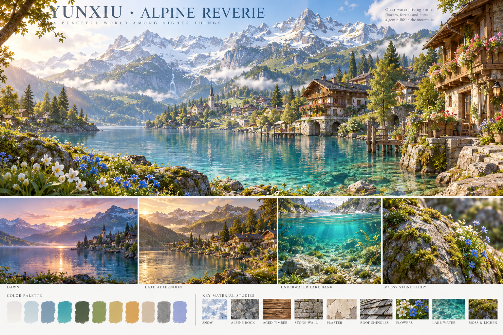
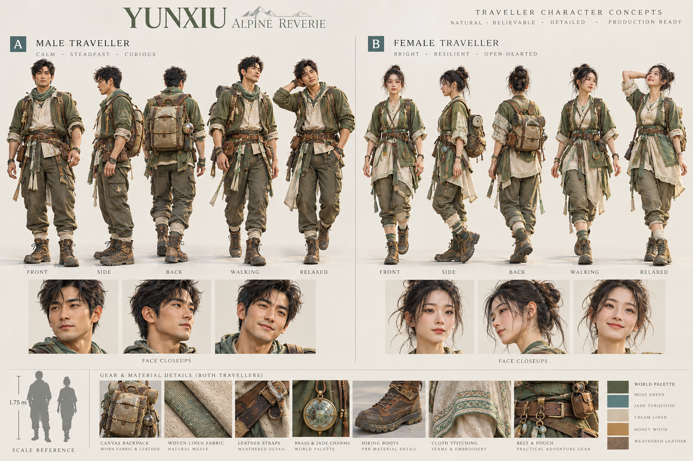
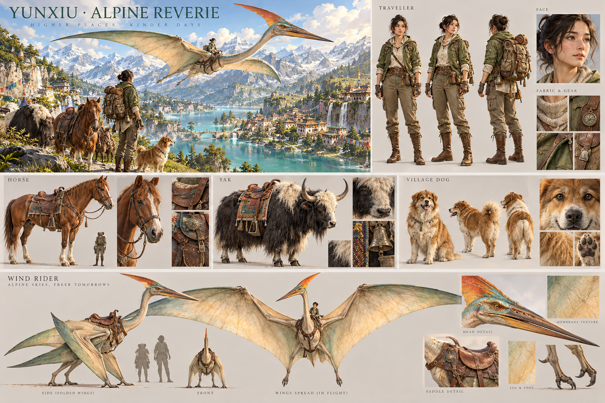
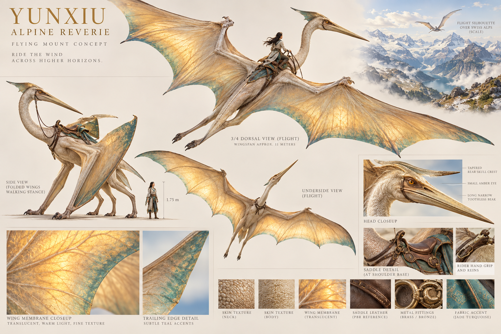
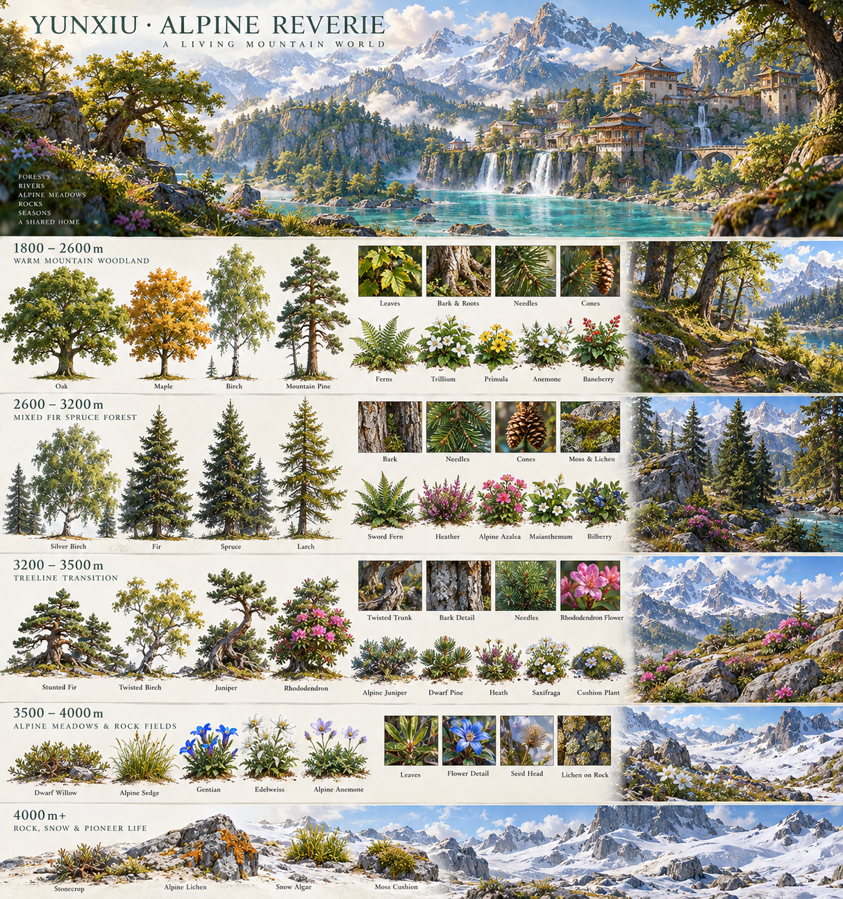
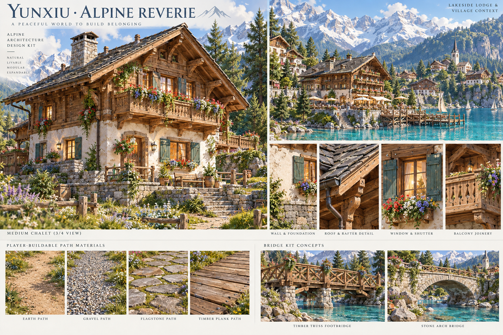
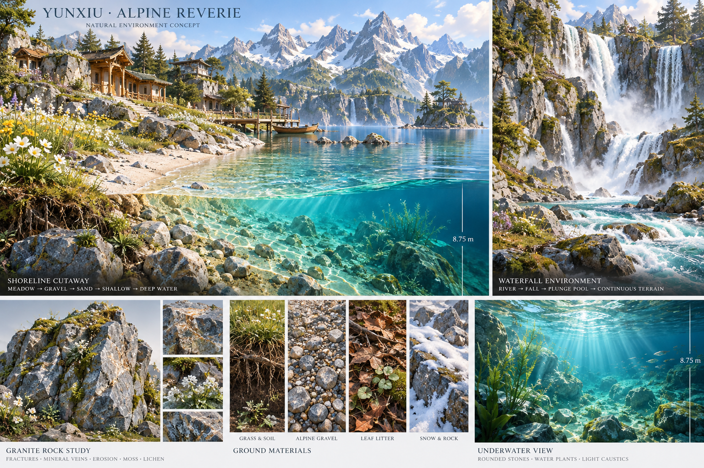
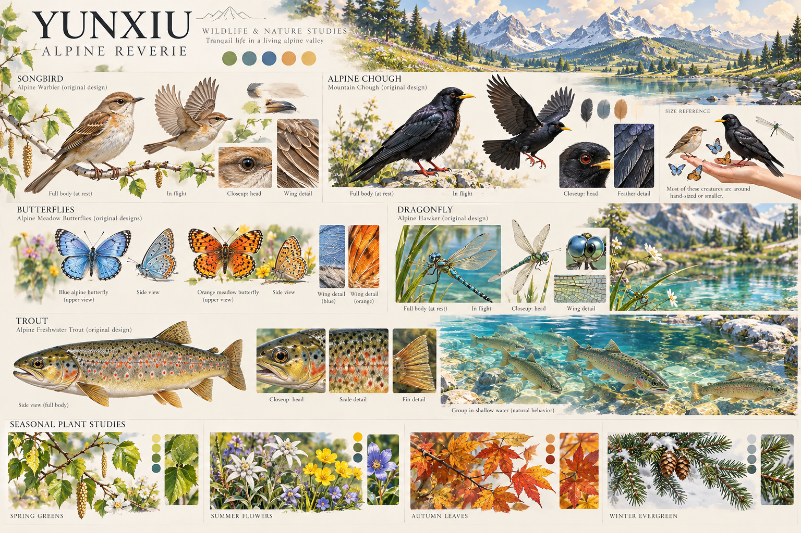

DESIGN BOARD 01
整体氛围与色彩
明媚的日光、通透的远山与蓝绿色湖水。整体色彩丰富，阴影保留蓝紫与青绿，避免灰暗与过曝。

点击图片打开原尺寸；可放大检查轮廓、纹理和细节。
以可信的形体、细腻的自然材质和富有层次的光照为基础，保留梦幻的色彩与诗意。先逐类确认图片，再制作正式三维模型与实景样板。
以下 8 板均为美术概念图，不是当前游戏截图，也不保证网页三维能逐像素复现。当前游戏沿用旧美术资源测试玩法；正式人物、坐骑和环境资源等待你选定方向。图中背景不改变定稿地图布局，建筑风格以第 06 板为准。
光照以清朗夏日为基准：暖阳、冷阴影、柔和反射、清晰空气透视。物体保留真实结构与尺度，在轮廓、色彩和构图上做艺术化；近看有树皮、矿物与木石接缝，远看有林冠、山体与村落层次。
明媚的日光、通透的远山与蓝绿色湖水。整体色彩丰富，阴影保留蓝紫与青绿，避免灰暗与过曝。

点击图片打开原尺寸；可放大检查轮廓、纹理和细节。
成人比例、自然表情与实用衣着。先确认人物气质、脸型和服装，正式制作再验收骨骼、步行、骑乘与游泳动画。

点击图片打开原尺寸；可放大检查轮廓、纹理和细节。
毛发分束、蹄爪结构、眼神和鞍具细节进入同一材质语言。此板中的背景仅作氛围参考，建筑以瑞士建筑板为准。

点击图片打开原尺寸；可放大检查轮廓、纹理和细节。
长喙、长颈、头冠与皮膜翼，前肢形成双翼、后肢行走；骑乘鞍位于肩背。确认造型后再制作正式模型与飞行骨骼。

点击图片打开原尺寸；可放大检查轮廓、纹理和细节。
低处混交林，中部松杉桦林，林线处矮化、稀疏与灌丛交错，3500–4000m 以低矮草甸花卉为主。图片不是植物分布图，实际边界按坡向、日照、湿度与海拔生成。

点击图片打开原尺寸；可放大检查轮廓、纹理和细节。
石基、灰泥、木构、深檐、瓦片、阳台与花窗。包含村宅、山庄，以及夯土、碎石、石板、木板和木／石桥的材质方向。

点击图片打开原尺寸；可放大检查轮廓、纹理和细节。
岩石有矿物纹理、裂隙、侵蚀与分区苔藓；水岸从草坡、湿砾、浅滩逐渐入深水；瀑布、河床与岸线连续衔接。

点击图片打开原尺寸；可放大检查轮廓、纹理和细节。
鸟、蝶、蜻蜓、鱼及季节枝叶的补充提案，待确认后逐项制作。这些是候选美术资源，尚未作为新玩法或动物加入世界。

点击图片打开原尺寸；可放大检查轮廓、纹理和细节。
免费资源优先从可核查许可的 Poly Haven、ambientCG、Quaternius 等来源筛选；逐项记录作者、许可和原始地址。Kenney 现有模型仅作原型，不作为本轮最终质量标准。若无匹配资源，再按已确认方案自建。
每板的倾向与备注会保存在此浏览器。你可以导出选择，或在对话里直接告诉我喜欢哪些编号、需要怎样调整；这份记录不会自动启动正式模型制作。
尚未填写